Walk cobblestone alleys of Seville, listen to flamenco at dusk, climb to the Acropolis at sunrise, and watch the sun fall into the Aegean from Santorini — all while mastering FIPI exam tasks.
Three words. What is today about?
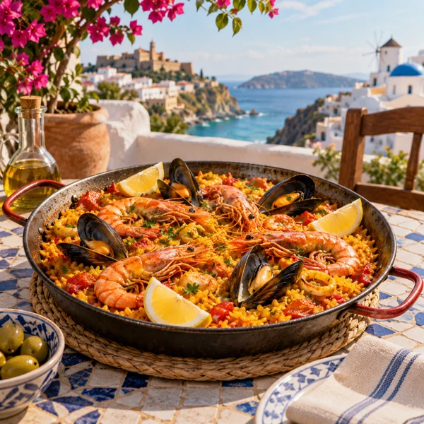
paella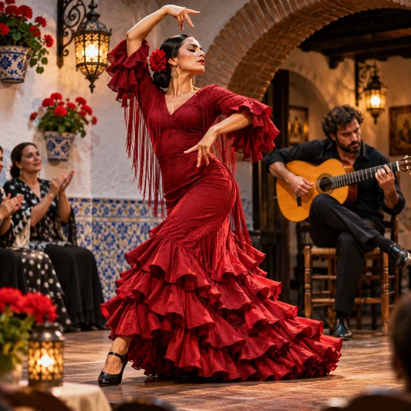
flamenco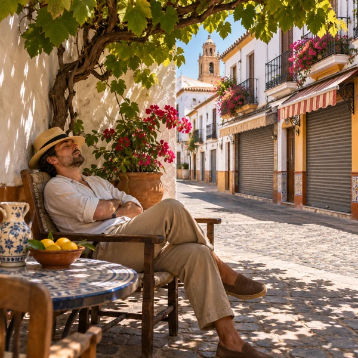
siesta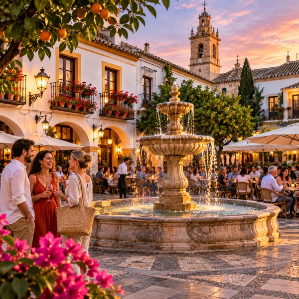
plaza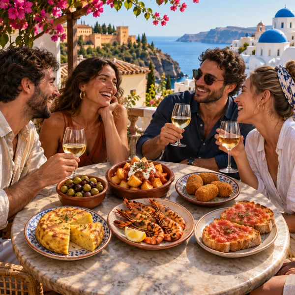
tapas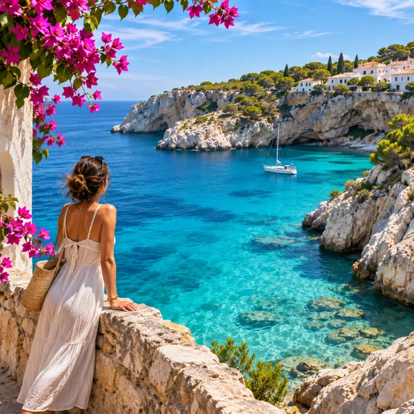
azure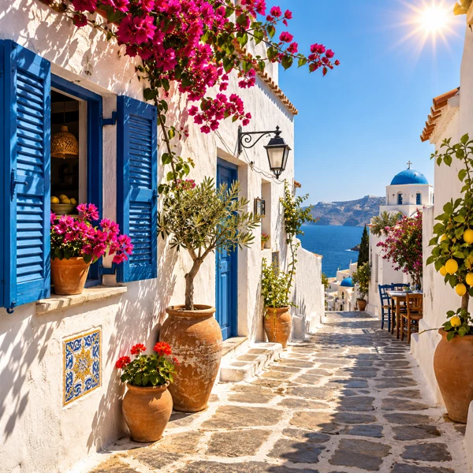
whitewashed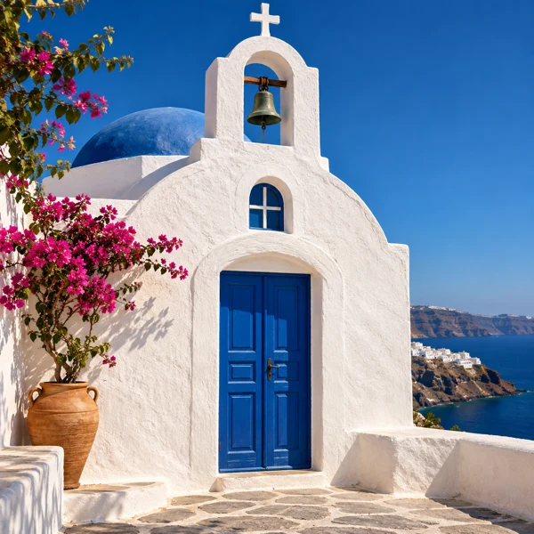
sun-drenched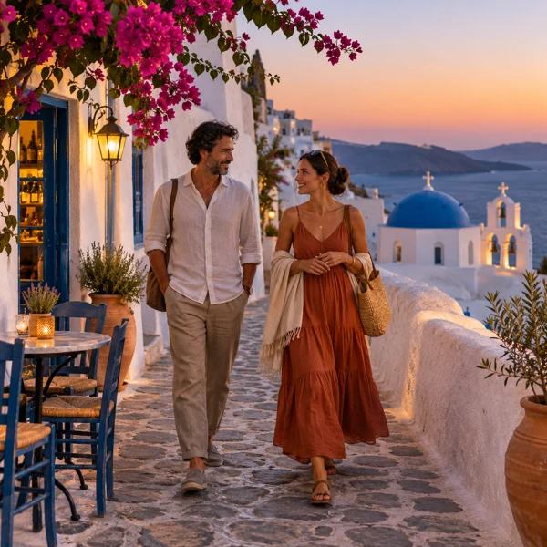
stroll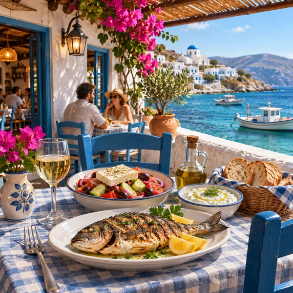
taverna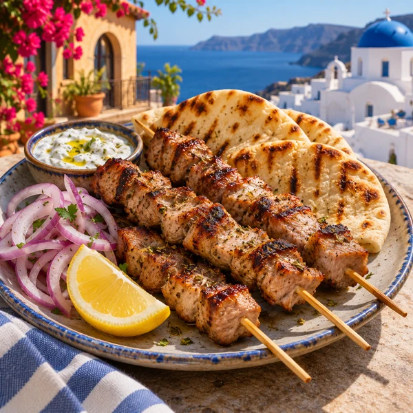
souvlaki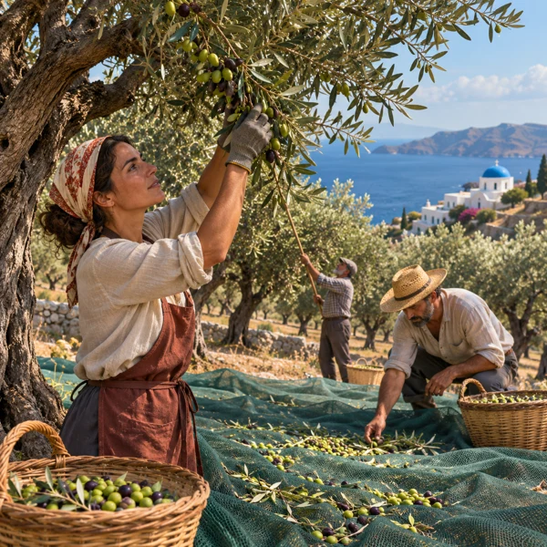
olive grove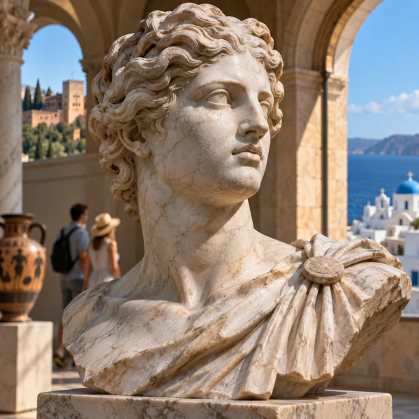
marble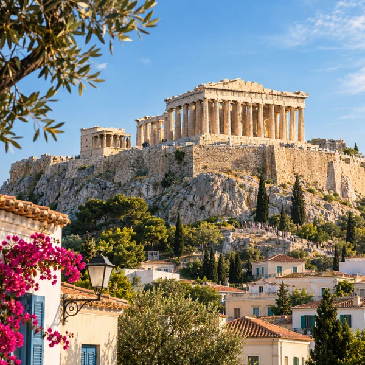
acropolis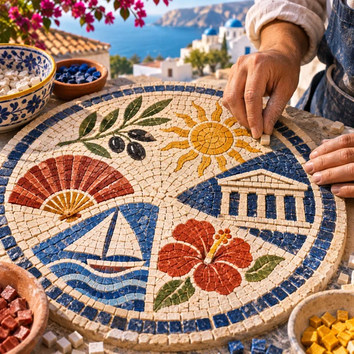
mosaic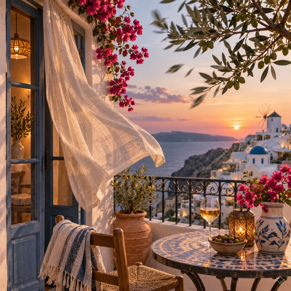
breeze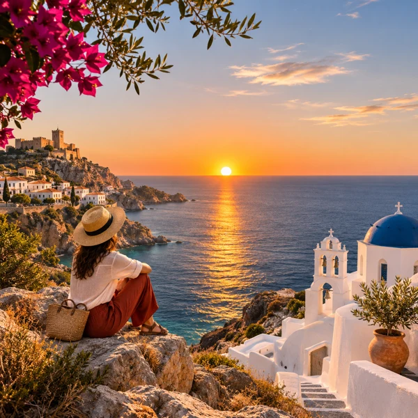
horizon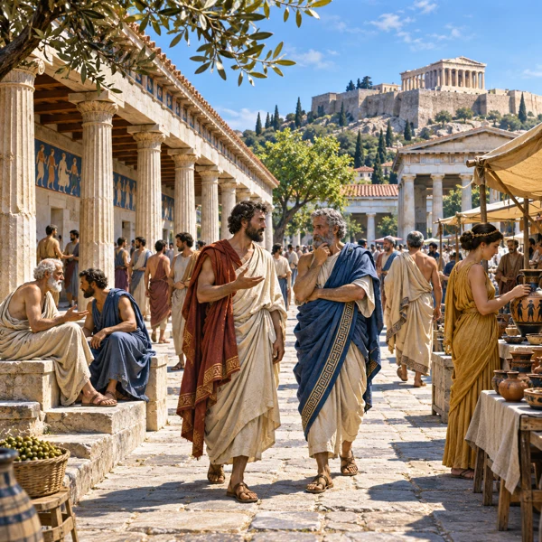
ancientThe Mediterranean Sea is almost completely enclosed by land — only the narrow Strait of Gibraltar (14 km wide) connects it to the Atlantic. Twenty-two countries share its coastline, and the sea gives its name to an entire style of cooking, music, and life.
1. The main ⋯ in Seville fills with music after sunset.
2. We ordered ⋯ with seafood at a little restaurant in Valencia.
3. Every evening a ⋯ show starts in the old Jewish quarter.
4. The ⋯ water of the Aegean stretched all the way to the horizon.
5. We walked through narrow ⋯ alleys lit by yellow lanterns.
6. The ⋯ houses of Santorini have bright blue domes.
7. A huge silver ⋯ covered the slopes behind the village.
8. The ⋯ of Athens stands on a rocky hill above the city.
One. Life in Spain runs on a different clock. Dinner at ten, siesta from two to five, children in the plaza past midnight — especially in the warm south.
Two. Flamenco was born in the Roma community of Andalusia about 250 years ago. UNESCO listed it as world heritage in 2010.
Three. Spain is just 14 kilometres from Africa. Seven centuries of Arab rule shaped the language, the food and the architecture of the south.
Four. Tapas — small shared plates — turn dinner into a social walk from bar to bar.
Five. Spain has 50 UNESCO World Heritage Sites, more than most other European countries.
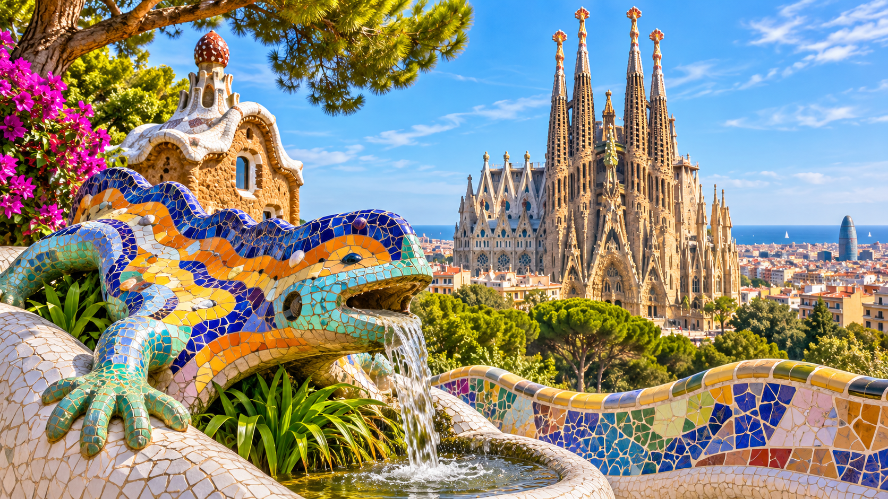
In 1882, a young Catalan architect called Antoni Gaudí took over a half-built church in the growing city of Barcelona. He kept the project for the next forty-three years. His design was unlike anything Europe had ever seen — stone columns that imitated forest trees, towers covered in coloured fruit, windows that bent light into rainbows on the marble floor.
Gaudí refused to draw final plans. He said the building would be finished «when God wants». When a tram knocked him down in 1926 at the age of 73, less than a quarter of the church was complete. His followers continued the work. The current date for completion is 2026 — one hundred years after the master's death.
Today, Barcelona is a city where Roman walls, Gothic cathedrals, Picasso's early studios, and Gaudí's wild architecture sit next to the beach. In the morning tourists climb to Park Güell for the mosaic dragon; in the afternoon they swim at Barceloneta; in the evening they walk La Rambla, listening to street guitarists until midnight.
Words are shuffled — say the question in the correct order. Click any word to hear it.
Speaker A: I came to Santorini only for the pictures. The whitewashed houses against the azure sea at sunset — every photographer dreams of this. My camera has not stopped working since Monday.
Speaker B: I study classics at university, and standing in front of the Parthenon was a dream since I was twelve. These stones have been here for two and a half thousand years. Nothing else gives me that feeling.
Speaker C: My children are seven and ten, and I was worried about taking them to a big city. But in Barcelona every restaurant welcomes families — kids run around, waiters bring them olives, nobody complains. That is why we keep coming back.
Speaker D: We came to Seville because of flamenco. Every evening we find a different show. The guitar, the singing, the stamping of the heels — it is more than a dance, it is a feeling.
Speaker E: I write about Mediterranean food for a travel blog. The best discoveries are never in big cities — they are in tiny mountain villages in Crete, where a grandmother still presses her own olive oil.
Speaker F: I retired at 62 and moved from Manchester to Spain. The winter here is plus 18 and sunny. Back home it was grey from November to March. For me, this is the simple reason.
Click a place name (top), then click the matching drop here next to its description.
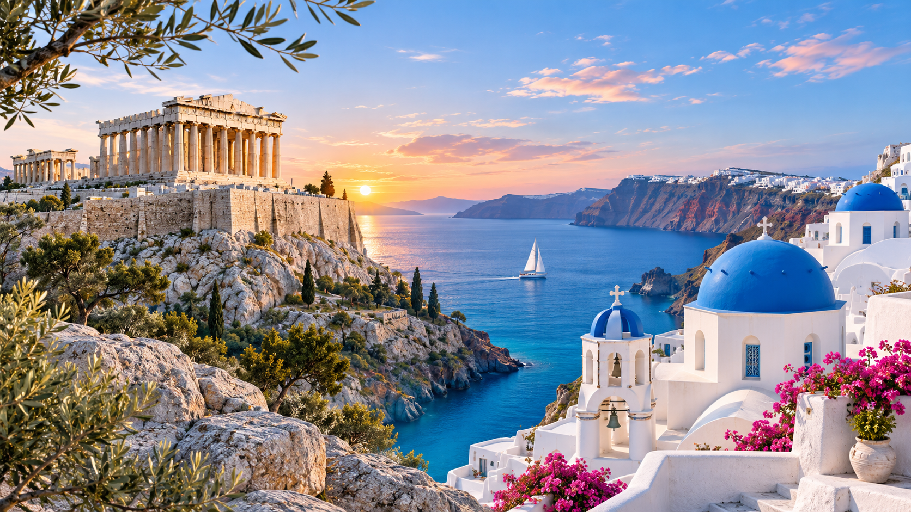
Five Things You Did Not Know About Greece
Greece is older than history books — and still very much alive. Here are five facts that often surprise first-time travellers.
1. Democracy was invented here. In the 5th century BC, in the small city of Athens, citizens began to vote directly on their own laws in a public assembly on the Pnyx hill. The word democracy comes from Greek — dēmos (the people) and kratos (power). About 30,000 men took part; women, slaves and foreigners did not.
2. Greece has nearly 6,000 islands. Only around 230 are inhabited. The biggest is Crete, home to the 4,000-year-old Minoan palace of Knossos. In the summer, dozens of ferries leave Athens's Piraeus port every single morning for the Cycladic and Dodecanese islands.
3. The Olympic Games were born in Olympia in 776 BC. They were held every four years in honour of Zeus and continued for almost twelve centuries. The modern Games were revived by Pierre de Coubertin in Athens in 1896.
4. The Greek alphabet is 2,800 years old. It gave the world the words alphabet itself (from alpha + beta) and most of the letters of the Latin and Cyrillic scripts. When you write «A», you are writing a Greek letter.
5. Santorini sits on a volcano. The island is the half-sunk rim of an ancient volcanic crater — the caldera — that exploded around 1600 BC in one of the largest eruptions in human history. The whitewashed houses on the cliff and the deep blue sea below are all part of that crater.
▶ or tap any bubble below to hear that line
| Use | Structure | Example |
|---|---|---|
| Life experience | Have you ever + V3? | Have you ever been to Athens? |
| Finished past trip | Past Simple (V2) | Last summer I visited Santorini. |
| Polite wish | I would like + to-V | I would like to try real paella. |
| Plan / intention | be going to + V | We are going to fly to Barcelona in June. |
| Future prediction | will + V | Seville will be hotter than Athens in July. |
| Comparative | -er / more + than | The Acropolis is older than the Sagrada Família. |
Short answers using lesson vocabulary.
Use the prompts from section 12 — now spoken aloud. Full sentence + 2 reasons each.
Begin with a classic frame and speak for 2 minutes. Pick 1 topic.
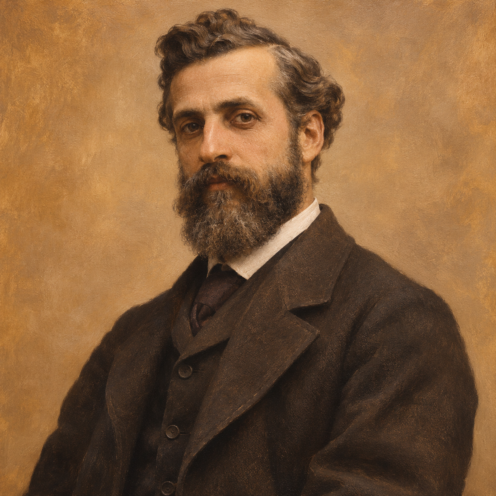
Catalan architect, the greatest exponent of Catalan Modernism. Son of a coppersmith, he transformed Barcelona with buildings that seemed to grow out of nature.
His Sagrada Família, begun in 1882, is still unfinished. Seven of his works are now UNESCO World Heritage: Park Güell, Casa Milà, Casa Batlló and others.
He died in 1926 after a tram knocked him down on his way to evening prayer. Dressed in old clothes, nobody recognised him; he was taken to a pauper's hospital.
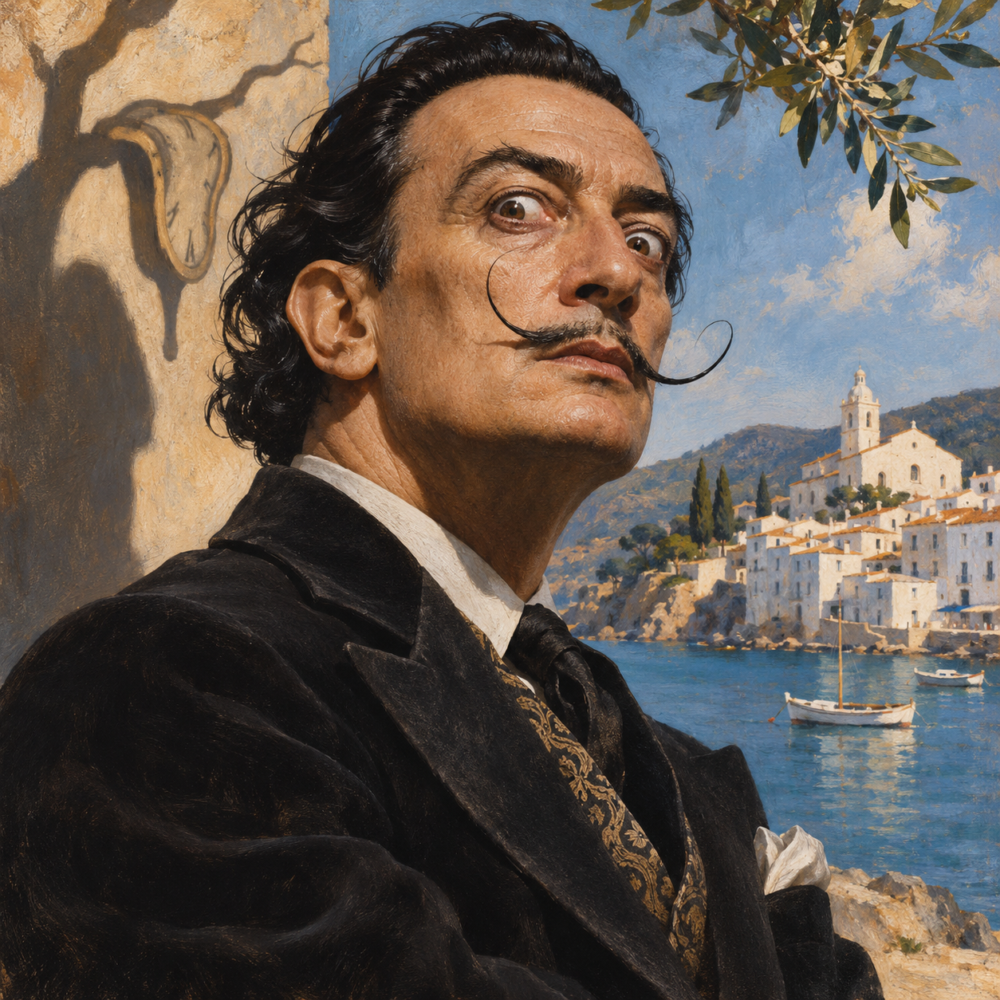
Spanish surrealist painter, famous for his melting clocks in The Persistence of Memory (1931). His curled moustache became as iconic as his paintings.
He studied in Madrid, worked in Paris with the surrealists, and later designed the dream sequence for Hitchcock's film Spellbound.
His Dalí Theatre-Museum in Figueres is the biggest surrealist object in the world — he is buried under its glass dome.
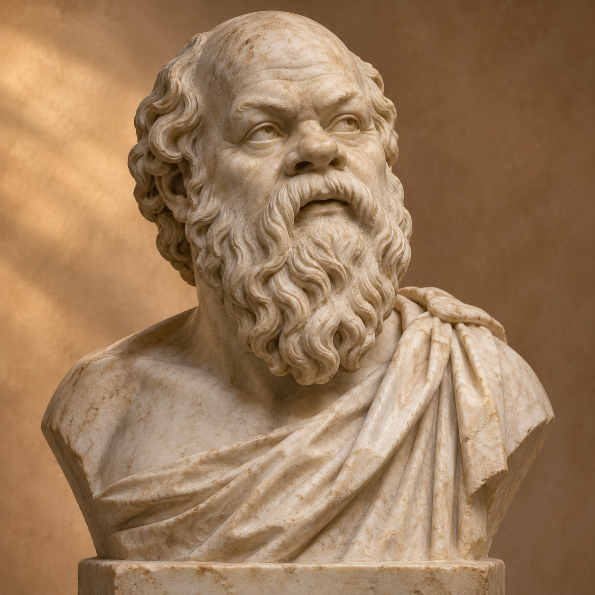
Classical Greek philosopher, the father of Western thought. He wrote nothing himself — all we know comes from his student Plato.
He walked the streets of Athens asking people simple questions until they realised they did not actually know what they thought they knew. This «Socratic method» is still used in universities today.
In 399 BC, Athens tried him for «corrupting the young» and condemned him to death. He drank a cup of hemlock and died calmly, surrounded by friends.
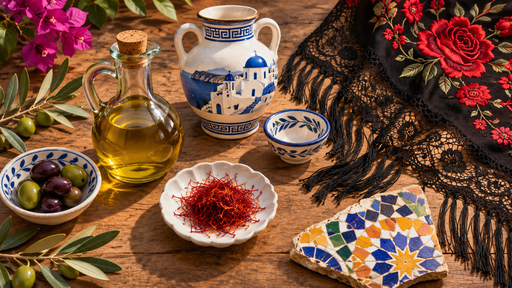
Long before the Mediterranean was a holiday beach, it was a factory of beauty. Five quiet exports still travel the world.
Olive oil. Spain produces nearly half of the world's olive oil; Greece makes some of the finest. A silver-leaved olive grove can live for 2,000 years. The oldest cultivated olive tree in Europe, in Crete, is still fruiting after 3,000 summers.
Saffron. La Mancha, south of Madrid, produces the most expensive saffron in the world — more expensive, gram for gram, than gold. One kilo of dry saffron requires 150,000 flowers, each hand-picked at dawn.
Blue-white ceramics. Greek island houses are famous for their blue domes and bright-white walls. The same palette appears on every tea cup and tile. Blue was the easiest paint to make from local clays — and it keeps away mosquitos in summer.
Lace and fans. In Seville, a traditional mantilla lace veil is still worn to Easter processions. Hand-painted folding fans (abanicos) started as a practical defence against the summer heat and became a national symbol.
Mosaics. Byzantine churches in Greece shine with tiny gold mosaic tiles that reflect candle-light for 1,500 years. Modern Barcelona's Park Güell revived the technique on an enormous scale, using broken ceramics.
Spain is the second most-visited country in the world after France, with 85 million tourists a year. The food scene has 15 three-star Michelin restaurants; San Sebastián alone has more Michelin stars per square kilometre than any city on earth. High-speed AVE trains link Barcelona–Madrid–Seville in just 2.5 hours. The siesta is slowly fading in big cities but still rules every pueblo.
Greece welcomes 33 million tourists a year — three times its own population. Santorini and Mykonos top the list, but newer visitors head to quiet islands like Milos, Naxos and Folegandros. Greek cuisine is now UNESCO-listed as part of the Mediterranean Diet — olive oil, fish, salad, feta. Ferries run on Greek time, which means «approximately on time».
| Tense | When | Example |
|---|---|---|
| Present Simple | facts · routines | The ferry leaves Athens at 07:40 every day. |
| Present Continuous | now · temporary | Look! The sun is setting over Santorini. |
| Present Perfect | life experience · just/ever/never | I have been to Seville three times. |
| Present Perfect Continuous | started in past, still happening | Monks have been living on Meteora rocks for 700 years. |
| Tense | When | Example |
|---|---|---|
| Past Simple | finished action with date | Gaudí died in 1926. |
| Past Continuous | action in progress at a past moment | While we were walking in Seville, the flamenco started. |
| Past Perfect | action BEFORE another past action | When we arrived in Athens, the museum had closed. |
| used to | past habit, no longer true | Spanish shops used to close for a 3-hour siesta. |
| Form | When | Example |
|---|---|---|
| will + V | spontaneous · prediction · promise | OK, I will book the ferry tonight. |
| be going to + V | plan · evidence now | We are going to visit Crete next May. |
| Present Continuous | fixed arrangement | Our flight is leaving at 09:15 tomorrow. |
| Future Perfect | finished BEFORE a future moment | By 2026 they will have finished the Sagrada Família. |
| Type | Structure | Example |
|---|---|---|
| Yes / No | Aux + Subject + V? | Have you visited Athens? |
| Wh- | Wh- + Aux + Subject + V? | Where did you stay in Barcelona? |
| Indirect (polite) | Could you tell me + Wh- + Subject + V? | Could you tell me where the Acropolis is? |
| Tag | …, auxiliary + pronoun? | Santorini is beautiful, isn't it? |
Give a talk on the topic. Remember to say:
You have 1.5 minutes to prepare, then up to 2 minutes to talk. Remember to give reasons for what you say.
Today I would like to give a talk about travelling to Mediterranean countries. It is a very popular topic among my generation, so I will share my view.
First of all, people travel to Mediterranean countries because of the warm climate, the delicious food and the long history. In summer the sea is warm from May to October, and even in winter the temperature rarely falls below plus fifteen in the south of Spain or on Crete.
Secondly, there is so much to see. In Spain you can visit the Sagrada Família in Barcelona, the Alhambra in Granada and watch flamenco in Seville. In Greece you can climb to the Acropolis, take a ferry to Santorini and walk among 2,500-year-old ruins.
Thirdly, if I could choose my dream trip, I would go to Santorini. I have seen photos of the whitewashed houses above the azure sea, and I would love to watch the sunset from Oia with my own eyes.
Finally, in my opinion, travelling in the Mediterranean is better than a simple beach holiday because you combine swimming with history and local food. You do not just rest — you learn.
In conclusion, the Mediterranean offers everything a traveller could wish for, and I hope to visit as many of its countries as possible.
Imagine that you and your friend are doing a school project. You have found two photos to illustrate it. Leave a voice message to your friend explaining your choice of the photos and sharing some ideas about the project.
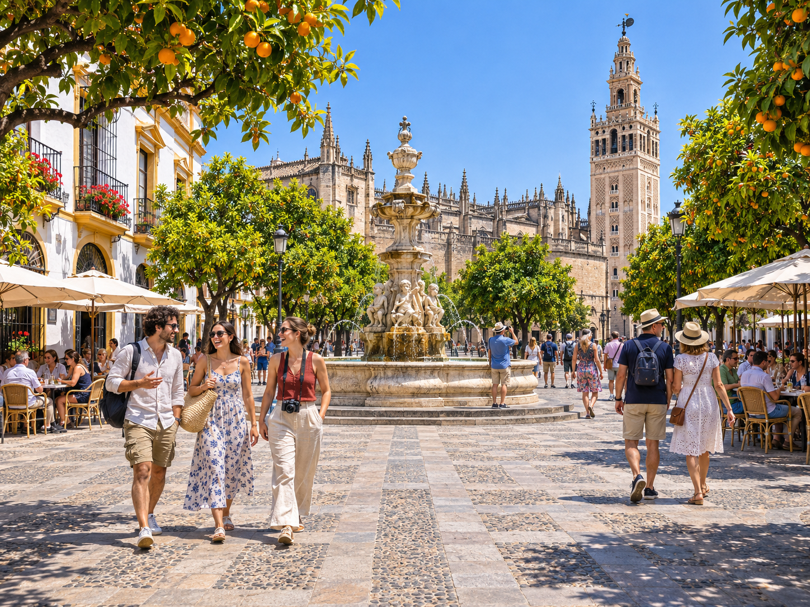
Photo 1 · Spain · Seville plaza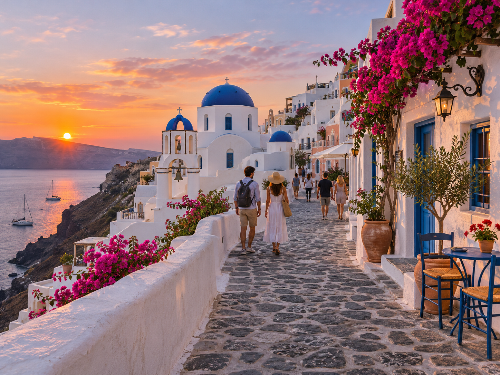
Photo 2 · Greece · SantoriniHi! I have found two great photos for our project on «Ways of exploring Mediterranean cities», and I would like to share my thoughts on them.
In the first photo, we can see a sunlit plaza in Seville. There are orange trees, a Baroque fountain in the centre and tourists sitting on café terraces. The second photo, on the other hand, shows a whitewashed village on a cliff in Santorini, with blue-domed churches above the azure Aegean at sunset. The main difference is obvious — the first photo is about a busy Spanish city square at midday, while the second shows a quiet Greek island at the end of the day.
Speaking of advantages, a Spanish city like Seville gives you rich history, live flamenco, and dozens of tapas bars within walking distance. A Greek island like Santorini, however, offers unforgettable scenery, clear sea and the calm pace of island life.
Of course, both options have drawbacks. A big city in summer can be noisy and hot, and tourists are everywhere. A small island can feel isolated in the evening, and prices in high season are very high.
Personally, I would prefer a Greek island like Santorini, because I love the sea and the slower rhythm. A sunset over the caldera gives you a feeling that no city square can match. To sum up, both formats have their charm, but for me the island wins.
Write a reply. In your reply: answer his 3 questions, then ask 3 questions about his favourite place in Barcelona.
Discuss both views and give your opinion.
Click each word to hear it. Read the Russian meaning + example. Then type the English word in the box and press Enter. Green = locked in.
| EN | RU | Example | Type & Enter |
|---|---|---|---|
| paella | паэлья | We had paella by the sea in Valencia. | |
| flamenco | фламенко | A flamenco show in Seville is unforgettable. | |
| siesta | сиеста | Shops close for the siesta from 2 to 5. | |
| plaza | площадь | The plaza fills with music after sunset. | |
| tapas | тапас (закуски) | We ordered six different tapas to share. | |
| azure | лазурный | The azure Aegean stretched to the horizon. | |
| cobblestone | булыжник | We walked through narrow cobblestone alleys. | |
| whitewashed | побелённый | Santorini is famous for whitewashed houses. | |
| sun-drenched | залитый солнцем | The sun-drenched terrace was perfect. | |
| stroll | прогуливаться | We strolled along the beach at sunset. | |
| taverna | таверна | Every taverna serves fresh grilled fish. | |
| souvlaki | сувлаки | A plate of souvlaki costs only a few euros. | |
| olive grove | оливковая роща | An olive grove covered the slopes. | |
| marble | мрамор | The Parthenon is built of pure white marble. | |
| acropolis | акрополь | The Acropolis of Athens is 2,500 years old. | |
| mosaic | мозаика | Byzantine mosaics decorate the church walls. | |
| breeze | бриз, лёгкий ветер | A warm breeze came off the sea. | |
| horizon | горизонт | The sun dropped below the horizon. | |
| ferry | паром | The ferry from Athens takes 8 hours. | |
| ancient | древний | Greece is full of ancient temples. |
💡 Finished? Say one sentence out loud using any 3 of the 20 words — the lesson is done.